工作任务模块主要实现了项目工作的计划、分配和完成进度管理。工作任务包括两种视图：列表方式，甘特图方式。
点击查看如何管理项目工作？
在列表方式中，任务以列表的方式展现，方便用户直观地查看和处理任务。列表方式的主界面。如下图所示：
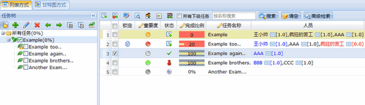
图 列表方式主界面
4.2.5.1.1 任务树管理
任务树中各按钮功能如下图所示：
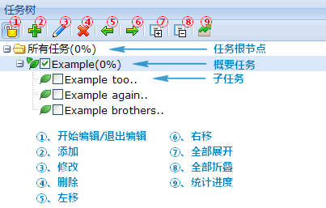
图 任务树各按钮
1、开始编辑与退出编辑
（1）开始编辑：任务列表默认为只读状态，选择任务树工具栏的“开始编辑”按钮可以对任务列表进行操作。
（2）退出编辑：任务列表处于编辑状态时，选择任务树工具栏的“退出编辑”按钮则任务列表退出编辑变为只读状态。
Tips：
系统不允许多个用户同时修改同一个项目的工作任务信息。所以当其他用户在编辑工作任务（激活了开始编辑按钮）时，您将无法修改工作任务信息，对您来说本项目的工作任务处于锁定状态。
2、添加任务/子任务
在任务树中选中”所有任务“，点击”添加“按钮或相应的右键菜单项，可以添加新任务；在任务树中选中一个任务，点击”添加“按钮或相应的右键菜单项，可以分解该任务，添加该任务的子任务。
3、修改任务
在任务树中选择一个任务，点击”修改“按钮或相应右键菜单项可以修改任务的名称。
4、删除任务
在任务树中选择一个任务，点击”删除“按钮或相应右键菜单项将弹出确认删除窗口，确认无误后可以删除任务。
Tips：
1、确认删除机制是为了防止用户误删数据，因为任务的删除是不可恢复的。
2、选中任务的所有子任务（如果有的话）将被一并删除。
5、左移/右移（升级任务/降级任务）
在任务树中选择一个或多个任务，点击”升级任务“按钮将升级所选任务；点击”降级任务“按钮将降级所选任务。
6、拖拽任务
在任务树中选择一个任务，拖拽该任务可调整该任务的位置、层次。部分效果同升级任务/降级任务。
7、全部展开/全部折叠
点击“全部展开”按钮将展开所有任务（及其子任务）；点击“全部折叠”按钮将折叠所有任务（及其子任务）。
8、统计进度
选中“所有任务”，点击“统计进度”按钮，将统计所有任务的完成比例；选中某个概要任务，点击“统计进度”按钮，将统计该概要任务（及其子任务）的完成比例。
4.2.5.1.2 任务列表管理
Tips：任务树与任务列表
选中任务树中某个节点（根目录、概要任务或某个叶子任务），任务列表中会列出相应的任务及其子任务。勾选“所有下级任务”后，任务列表中还会列出相应任务的全部子任务。
任务列表中各按钮如下图所示：
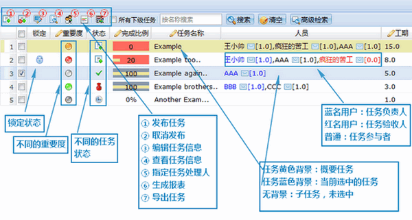
图 任务列表各按钮
1、发布任务
选中未发布的任务，点击“发布”按钮可以发布任务。
Tips：任务发布后，任务处理人将在首页任务列表中看到该任务，并处理。
2、取消发布
选中已发布的任务，点击“取消发布”按钮可以取消发布该任务。
3、编辑任务信息
选中一个任务，点击“编辑”按钮可以编辑该任务，如下图：
任务信息包括基本信息，任务状态，参与人员，风险列表，进展情况报告，任务文件以及变更历史。
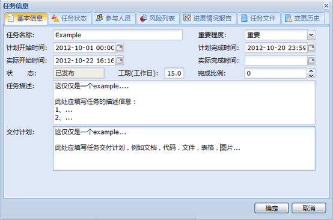
图 编辑任务信息
（1）基本信息：用户可以修改任务的基本信息，包括名称，重要度，计划/实际的开始时间、借宿时间、任务描述以及交付计划。
（2）任务状态：用户可以修改任务的状态，任务在不同的状态时，可做的操作并不一致。
（3）参与人员：用户可以为任务指定处理人，处理人包括四类：任务负责人，任务参与者，任务关注人以及任务验收人。双击可修改参与类型。
（4）风险列表：用户可以管理任务风险，包括添加风险，关闭风险，删除风险。风险信息会通过邮件提醒任务参与者。
（5）提交报告或反馈：用户可以提交报告或反馈，提交报告或反馈时会通过邮件提醒任务参与者。
（6）任务文件：任务发布者，参与者均可以提交任务文件。
（7）变更历史：任务的任何变更信息都会被记录在变更历史中。
4、查看任务信息
选中一个任务，点击“查看任务信息”按钮可以查看任务详细信息，如下图：
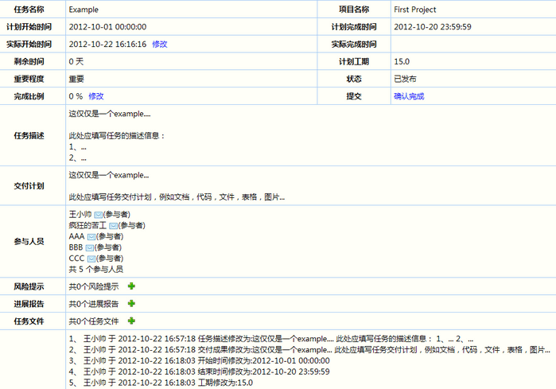
图 任务信息
5、指定处理人
选中一个任务，点击“指定处理人”按钮可以打开指定处理人界面。用户可以为任务指定（追加或覆盖）处理人，处理人包括四类：任务负责人，任务参与者，任务关注人以及任务验收人。
6、生成报表
点击“生成报表”按钮，将弹出报表输出条件选择见面，选择合适的条件并输出报表。生成的报表显示了表显示“人员与工分统计图”、“项目工分统计图”、“任务状态统计图”、“按时间段统计工分图”“人员与任务统计表”、“项目与任务统计表”“任务统计表”、“按时间段统计工分表”等。
7、导出任务
“点击“导出”按钮，用户可以将任务以xml文件的形式导出全部任务
8、任务检索
用户可以按名称检索任务，也可以按人员，状态等信息详细检索任务。
在甘特图显示方式中，任务以列表和甘特图的方式展现，使用户更加直观的查看任务的进展情况与任务之间的关联关系。甘特图方式的主界面，如下图所示:
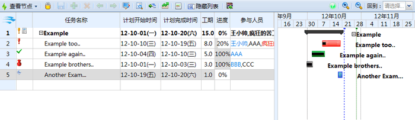
图 任务甘特图
Tips:
1、列表方式和甘特图方式中的锁互斥。
2、甘特图方式与列表方式只是任务的显示方式不一样，基本的功能都是一致的，故相同的功能不再赘述，本节主要介绍甘特图与列表方式中特有的功能和操作。
4.2.5.1.2 甘特图基本功能
本节将描述与列表方式相比独有的功能，甘特图各按钮功能如下图：
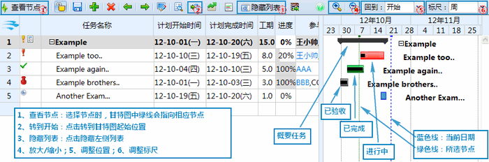
图 甘特图按钮功能
1 、任务列表与甘特图
（1）在甘特图方式中，左侧的任务列表与右侧的甘特图中的任务是一一对应的。选中甘特图中的任务，左侧任务列表中该任务也会被选中。
（2）在任务列表中展开概要任务，甘特图中相应的任务也会随之展开，反义亦然。
2、查看节点
点击“查看节点”按钮，选择某个节点，可以查看节点在甘特图中的位置，便于用户查看节点内的任务进展情况。
3、转到开始
点击“转到开始”按钮，甘特图会转到起始位置
4、隐藏列表
点击“隐藏列表”按钮，将隐藏左侧任务列表。
4、调整甘特图
点击“放大标尺”、“缩小标尺”、选择“回到”某位置，选择“标尺”可以调整甘特图的当前位置以及显示大小。
5、查看甘特图
（1）概要任务，叶子任务，各状态的任务在甘特图中分别如上图所注显示。
（2）蓝色线处于当前日期。
（3）绿色线处于所选节点日期。
（4）拖动滚动条可以查看更多任务信息。
5、甘特图操作
（1）鼠标放置在甘特图中某任务上，将显示该任务的信息。
（2）双击甘特图中的某任务，将打开任务编辑窗口。
（3）选中任务，可以整体挪动任务以修改任务的计划时间段（工期不变，提前或推迟任务）。
（4）选中任务的边界（开始或结束），可以拖动以修改任务的时间（计划开始时间或计划完成时间）。
（5）选中任务中间的进度条，可以修改任务完成比例（进行中的任务）。
任务发布后，任务处理人在oKit首页将看到该任务，如下图：
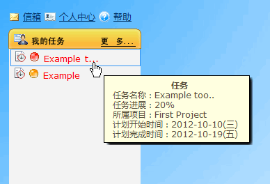
图 首页的任务
点击可进入任务详细信息界面，任务详细信息包括基本信息与任务分解两个页面，以下分别加以介绍。
4.2.5.3.1 基本信息
基本信息界面列出了任务的所有信息，包括任务名称、计划/实际的开始时间和完成时间、剩余时间、计划工期、完成比例、任务描述、交付计划、参与人员、分工安排、风险、报告与反馈、任务文件以及变更历史。
根据在任务中参与角色的不同（负责人，验收人，参与者）、任务所处状态的不同，用户可以修改实际任务处理时间，上报任务完成进度，提交任务风险、报告与反馈、任务文件，确认任务完成，验收任务。基本信息界面如下所示：
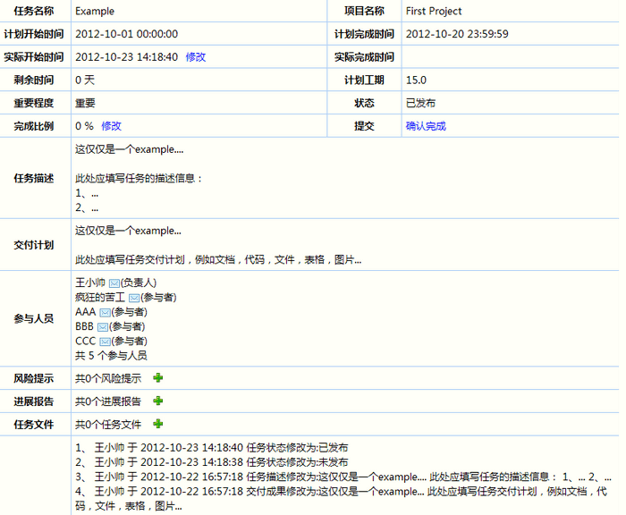
图 任务基本信息
1、修改实际开始时间
所上图所注，点击“修改”按钮可以修改任务实际开始时间。
2、修改完成比例
在任务进行过程中，任务参与者可以随时上报任务进度。点击修改完成比例即可，如下图：
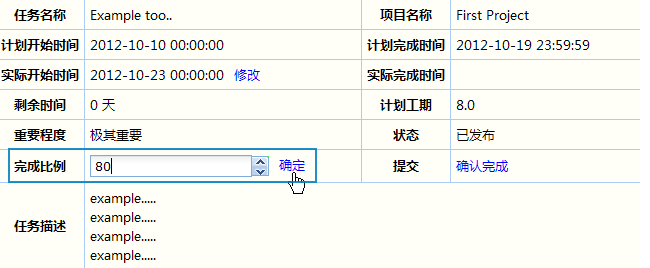
图 修改完成比例
3、管理任务风险
任务参与者可以添加、关闭和删除风险，如下图所示：
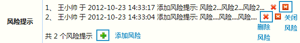
图 管理任务风险
4、管理报告与反馈
任务参与者可以添加、删除报告与反馈，如下图所示：
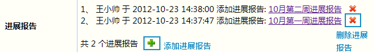
图 管理任务报告与反馈
5、管理任务文件
任务参与者可以添加、删除和下载任务文件，如下图所示：
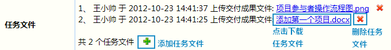
图 管理任务文件
6、提交任务
点击“确认完成”，即可提交任务，任务提交后，状态转换为“已完成”，并从用户的任务列表中移除。如下图：
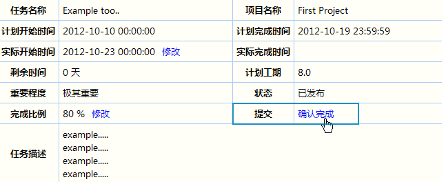
图 提交任务
7、验收任务
任务完成后，任务验收人的首页会出现验收任务，如下图：
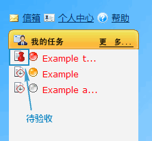
图 验收任务1
点击进入基本信息界面，点击验收该任务，如下图：
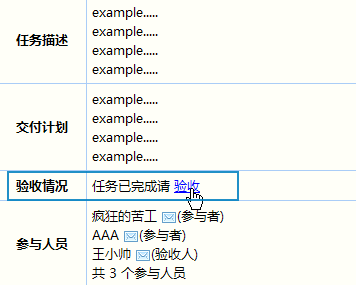
图 验收任务2
弹出验收任务界面，输入验收信息，如下图：
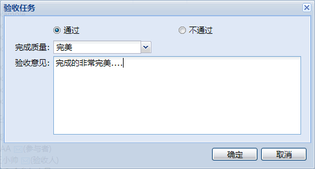
图 验收任务3
验收完成后，查看任务验收信息，如下图：
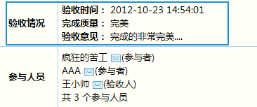
图 验收任务4
oKit2.5版本开始支持任务分解，即任务负责人可以将任务分解为多个子任务。任务分解界面如下所示：
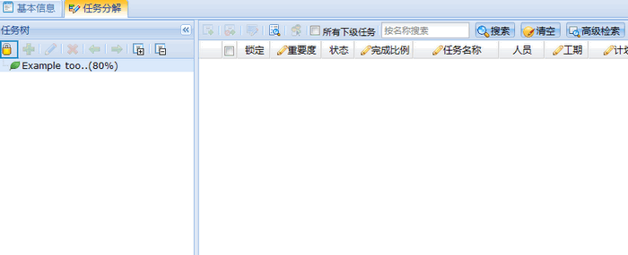
图 任务分解
不难发现，任务分解的界面与工作任务列表方式的界面与功能几乎是一致的。不一样的是，在任务分解中，被分解的任务作为任务树的根节点。
1、分解任务
点击“开始编辑”按钮，各操作按钮将被激活，为该任务添加子任务即可，如下图所示：
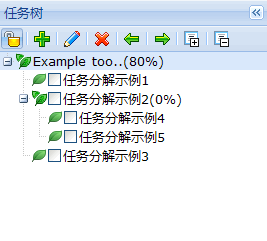
图 任务分解
Tips:
1、仅任务负责人可以分解任务，其他任务参与者在任务分解界面仅能查看任务分解情况，不能操作。
2、只有非锁定状态的任务才能被分解。
3、分解的各任务，其负责人能各自分解其任务，以此类推..
2、开始编辑与退出编辑
不难发现，在工作任务模块中，想要编辑任务，必须先点击“开始编辑”按钮。多人同时编辑任务往往引起数据不统一，因而oKit引入了互斥锁机制，同一时刻仅允许一个人编辑工作任务模块数据。
点击“开始编辑”按钮前，图标显示为锁定形状，如图
点击“开始编辑”按钮后，图标显示为开锁形状，如图
3、锁定状态
在任务分解中，任务负责人同样需要先点击“开始编辑”按钮，然后才能分解任务。我们为任务锁定状态作如下定义：
锁定状态：
1、任务负责人在任务分解界面，点开“开始编辑”按钮（即图标为开锁形状时），则该任务处于锁定状态。锁定人为任务负责人
2、某任务处于锁定状态时，其全部子任务均处于锁定状态。子任务的锁定人是父任务的锁定人
3、当某任务被锁定时，锁定人以外的用户均无法编辑该任务，且该任务显示为锁定状态，如下图：
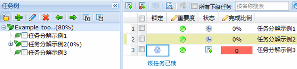
图 任务锁定
查看工作任务处理流程请点击如何管理项目工作？